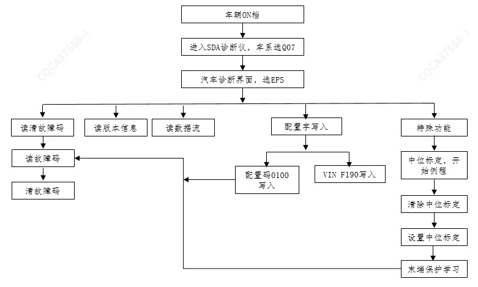

EPS下线配置、角度中位标定流程如下图所示：

1、本车型集成转角传感器（SAS）零件在EPS内部，ESC/ESP/ACC/倒车影像等系统使用的方向盘转角信号由EPS系统提供，因此若上述系统报出“转向角传感器未标定”等与转角传感器相关故障时，需检查EPS系统是否正常，并重新进行EPS转角中位标定。
2、针对重新更换EPS，标定流程选择特殊功能进行中位标定、末端保护学习流程及配置字操作步骤；针对未更换EPS，但涉及EPS角度传感器中位或方向盘中位重新修正的情况，需要进入EPS诊断仪特殊功能，先清除中位、再选择中位标定，最后进行末端保护学习操作；操作后均需对EPS系统进行清故障、读故障动作确认系统无故障。
3、重新进行EPS角度中位标定后，需要对末端保护进行学习，具体学习方法为：方向盘从中间位置转到左极限位置，保持时间≥1S、手力≥6Nm；然后方向盘转到右极限，保持时间≥1S、手力≥6Nm；最后方向盘回正。
4、在系统无故障状态下，需对EPS做完配置字、角度中位标定及末端保护学习后，EPS故障灯才能熄灭；检查确认故障灯熄灭后用诊断仪对EPS及相关零件进行清除历史故障码。